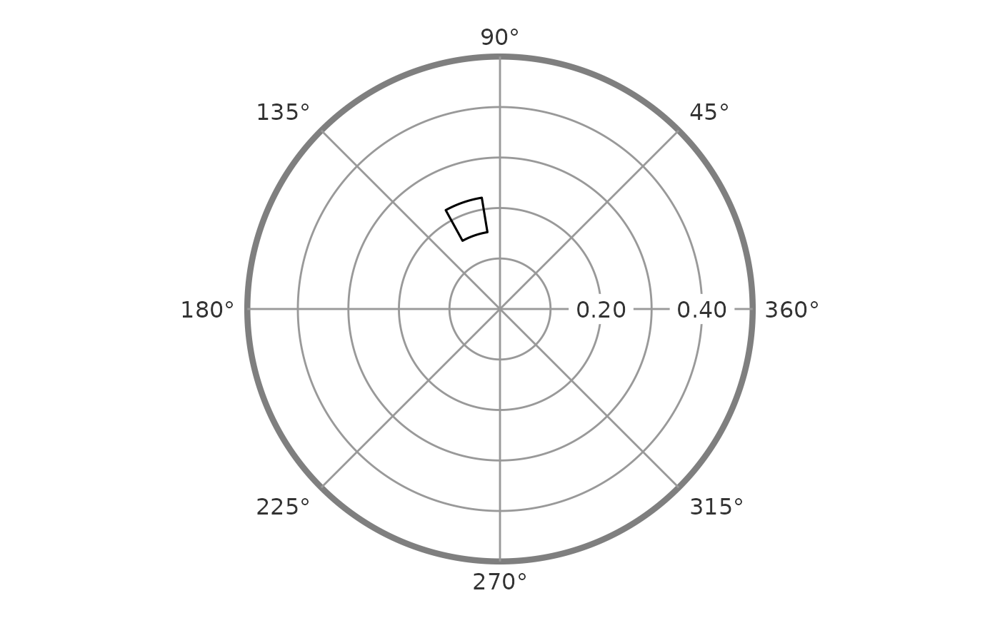

A ggplot2 layer that draws, for each profile, the wedge spanning its
amplitude confidence interval (radially) and its displacement confidence
interval (angularly), on the canvas produced by ggcircumplex(). The
amplitude/displacement-to-canvas transform – including the wrap-around when
a displacement interval crosses the 0/360 degree boundary – is handled
internally, so the bounds are supplied directly in SSM units.
Usage
geom_ssm_arc(
mapping = NULL,
data = NULL,
stat = StatSsmArc,
position = "identity",
...,
amax = 0.5,
n = 360,
na.rm = TRUE,
show.legend = NA,
inherit.aes = TRUE
)Arguments
- mapping, data, stat, position, show.legend, inherit.aes, ...
Standard ggplot2 layer arguments.
mappingmust supply theamplitude_min,amplitude_max,displacement_min, anddisplacement_maxaesthetics.- amax
A single positive number giving the amplitude represented by the canvas's outer ring; must match the
amaxused forggcircumplex()(default = 0.5).- n
The number of points used to draw each arc's curved edges (default = 360).
- na.rm
Ignored; profiles with a missing displacement or amplitude bound (degenerate profiles) are always dropped.
Details
Each arc spans counterclockwise from displacement_min to
displacement_max (both in degrees). Supply them in [0, 360). A
displacement_min greater than displacement_max is read as an interval
that crosses the 0/360 seam and is drawn the short way across it (e.g.
350 -> 10 is a 20 degree arc, matching how the package stores a
displacement CI that straddles the boundary). The interval must describe
less than a full circle; bounds that imply a span of 360 degrees or more
(for example, values outside [0, 360)) are rejected, since they do not
name a unique arc.
Examples
data("jz2017")
res <- ssm_analyze(jz2017, scales = 2:9, measures = "NARPD")
amax <- 0.5
ggcircumplex(octants(), amax = amax) +
geom_ssm_arc(
data = res$results,
mapping = ggplot2::aes(
amplitude_min = a_lci, amplitude_max = a_uci,
displacement_min = d_lci, displacement_max = d_uci
),
amax = amax, alpha = 0.4
)
